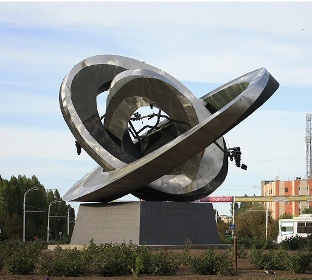
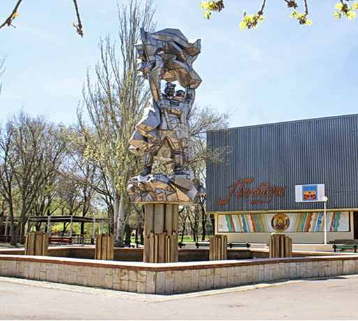
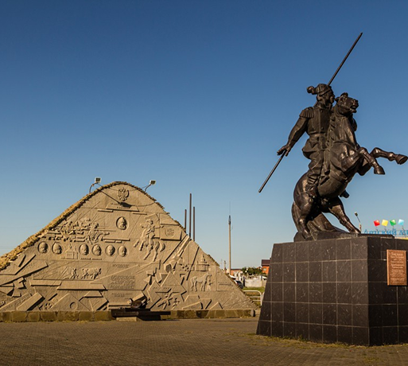

Чего мы там не видели?
Волгодонск — это молодой, динамично развивающийся город Ростовской области, основанный в 1950 году как поселение строителей Волго-Донского судоходного канала. Сегодня он известен как промышленный и энергетический центр, где расположена Ростовская атомная электростанция и крупнейшие предприятия машиностроения. Здесь сочетаются просторные улицы, зелёные парки и современная городская инфраструктура. Волгодонск стоит на берегу Цимлянского водохранилища, создавая атмосферу приморского города с возможностью активного отдыха у воды.
-
Мирный атом
Памятник «Мирный атом» в центре Волгодонска символизирует ядерную энергию, служащую на благо человечества. Скульптура Ю.В. Александрова изображает орбиты атома, увитые виноградной лозой, олицетворяя силу, которую человек направил на развитие и созидание. Композиция напоминает, что атом должен приносить жизнь, а не разрушение.
-
Парк Победы
Парк Победы — любимое место отдыха жителей и гостей города Волгодонска, был открыт 9 мая 1985 года, в день 40-летия Победы в Великой Отечественной войне.
-
Курган казачьей славы
Курган казачьей славы – мемориальный комплекс на набережной Волгодонска, открытый в 2008 году в честь героического прошлого донского казачества. Центральное место занимает 7-метровая конная статуя генерала Якова Петровича Бакланова – уроженца Донского края и героя Кавказской войны. Барельефы на символическом кургане запечатлели историю казаков и образы знаменитых атаманов. Памятник, созданный по инициативе Виктора Стадникова и поддержанный жителями города, стал символом уважения к подвигам предков и сохранения казачьих традиций.